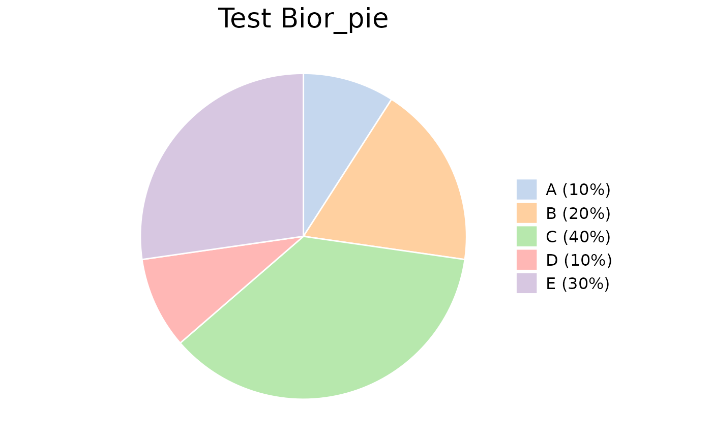
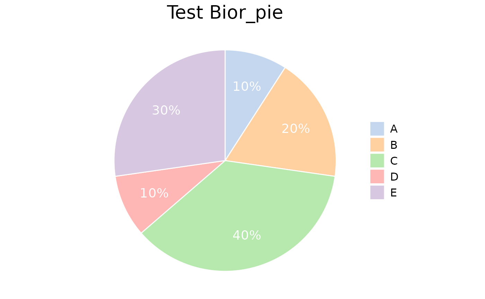

Bior_PiePlot.RdCreate a Pie plot.
Bior_PiePlot(
value,
type,
label = NULL,
col = pal_d3("category20", alpha = 0.7)(20),
title = "",
text.size = 15,
plot.title.size = 20,
label.x = 1.2,
label.color = "white",
label.size = 5
)A vector of value
A vector of type
(defaut: label=NULL); A vector of label
(defaut: col=pal_d3("category20,",alpha=0.7)(20)); colour for type
(defaut: title=""); title for plot
(defaut: text.size=15); text size
(defaut: plot.title.size=20); plot.title size
(defaut: label.x=1.2); geom_text x for label
(defaut: label.color="white"); geom_text color for label
(defaut: label.size=5); geom_text size for label
A ggplot object
# Examples 1
value <- c(0.1,0.2,0.4,0.1,0.3)
type <- c("A (10%)", "B (20%)", "C (40%)", "D (10%)", "E (30%)")
col <- c("#AEC7E8B2", "#FFBB78B2", "#98DF8AB2", "#FF9896B2", "#C5B0D5B2")
Bior_PiePlot(value=value, type=type, col=col, title="Test Bior_pie")

# Examples 2
value <- c(0.1,0.2,0.4,0.1,0.3)
type <- c("A", "B", "C", "D", "E")
label <- c("10%","20%","40%","10%","30%")
col <- c("#AEC7E8B2", "#FFBB78B2", "#98DF8AB2", "#FF9896B2", "#C5B0D5B2")
Bior_PiePlot(value=value, type=type, label=label, col=col, title="Test Bior_pie",
label.x=1.2, label.color="white", label.size=5)
